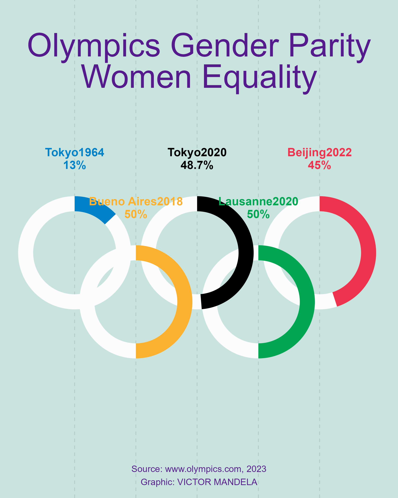

Inspired by Georgios KaramanisThis Chart is a contribution to day 1 of the hashtag#30DayChartChallengeHere are facts about the achievement of gender equality reported by www.olympic.com
You can get the code here on github 2024 Day 1 chart challenge

Code snippet for Chart:
library(tidyverse)
library(ggforce)
library(camcorder)
gg_record(dir = here::here("2024/01/"), device = "png", width = 1080 * 2, height = 1350 * 2, units = "px", dpi = 320)
# https://olympics.com/en/news/paris-2024-first-games-to-achieve-full-gender-parity
r <- 1.3
women <- tribble(
~olympics, ~year, ~pct, ~x0, ~y0, ~col,
"Tokyo", 1964, 13, 2*r - r/2, 3*r, "#0081C8",
"Tokyo", 2020, 48.7, 4*r, 3*r, "black",
"Beijing", 2022, 45, 6*r + r/2, 3*r, "#EE334E",
"Bueno Aires", 2018, 50, 3*r - r/4, 2*r, "#FCB131",
"Lausanne", 2020, 50, 5*r + r/4, 2*r, "#00A651"
)
f1 <- "Graphik"
f1b <- "Graphik Compact"
f2 <- "Produkt"
f2b <- "Produkt Medium"
ggplot(women) +
# geom_circle(aes(x0 = x0, y0 = y0, r = 1.3, colour = col), linewidth = 8) +
geom_vline(aes(xintercept = x0), alpha = 0.1, linetype = "dashed") +
geom_arc_bar(aes(x0 = x0, y0 = y0, r = 1.5, r0 = 1.1, start = 0, end = 2 * pi), fill = "grey99", color = NA) +
geom_arc_bar(aes(x0 = x0, y0 = y0, r = 1.5, r0 = 1.1, fill = col, start = 0, end = pct * 2 * pi / 100), color = NA) +
geom_text(aes(x0, y0 + if_else(year %in% c(1932, 1992), -2.5, 2.5), label = paste0(olympics, year, "\n", pct, "%"), color = col), lineheight = 0.9, family = f1, size = 5, fontface = "bold") +
annotate("text", 5.25, 9, label = "Olympics Gender Parity\nWomen Equality", family = f2b, color = "purple4", size = 14, lineheight = 0.8) +
annotate("text", 5.25, -2, label = paste0("Source: www.olympics.com, ", 2023, "\n", "Graphic: VICTOR MANDELA"), family = f2, color = "purple4") +
scale_color_identity() +
scale_fill_identity() +
coord_fixed(xlim = c(0.5, 10), ylim = c(-2, 10)) +
theme_void() +
theme(
plot.background = element_rect(fill = "#C9E4DE", color = NA)
)Olympic Movement: Achievements in gender equality
Paris 1900: Female athletes first took part in the Olympic Games, four years after the first modern Olympics took place in Athens
1996: Promotion of women becomes a mission of the IOC and is enshrined in the Olympic Charter
Tokyo 2020: The last edition of the Games were the most gender-balanced to date with 48.7 per cent of athletes women. At Tokyo 1964, only 13 per cent of the athletes were women.
Tokyo 2020: Following a rule change allowing one male and one female athlete to jointly carry their flag during the Opening Ceremony, 91 per cent of NOCs had a female flag bearer
Tokyo 2020: Three disciplines achieved gender balance (BMX racing, mountain biking and freestyle wrestling)
.jpg)
Beijing 2022: The last Olympic Winter Games were the most gender balanced to date with 45 per cent female athletes
Paris 2024: Out of the 10,500 athletes participating in the Games, 5,250 will be men and 5,250 women. These Games will be the first to reach full gender parity in terms of number of athletes.
Female IOC membership currently stands at 40 per cent, up from 21 per cent at the start of the Olympic Agenda 2020

Youth Olympic Games: The Youth Games Buenos Aires 2018 and Winter Youth Games Lausanne 2020 reached full gender parity in overall athlete participation (2,000 athletes per gender in 2018 and 936 in 2020)

Bueno Aires 2018 Female representation on the IOC Executive Board stands at 33.3 per cent, versus 26.6 per cent before the Olympic Agenda 2020
50 per cent of the members of IOC Commissions positions have been held by women since 2022, compared with 20.3 per cent prior to the Olympic Agenda 2020. In addition, a record high of 13 of the 31 commissions were chaired by women in 2022.